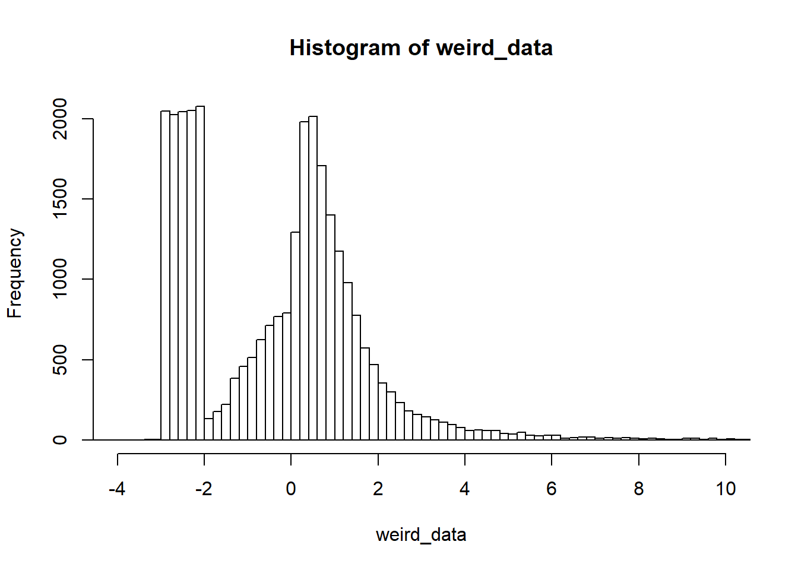
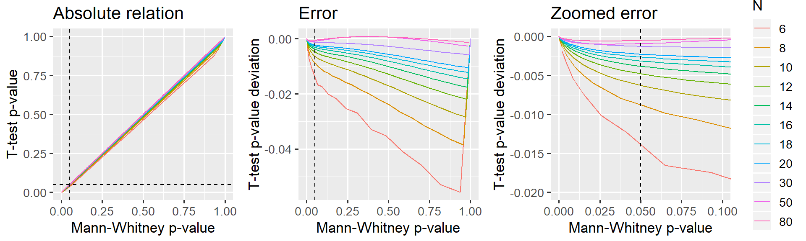

This document presents the close relationship between the p-values of the Mann-Whitney U test and a two-sample t-test on the ranked data. It is an appendix to the post “Common statistical tests as linear models”.
TL;DR: I argue below that starting at N = 12, 5the t-test is a reasonable approximation. For N > 30, it is almost exact.
Since the Mann-Whitney U is a Wilcoxon test, it may also be worth looking at my equivalent simulation about whether Wilcoxon Signed Rank test is one-sample t-test on ranks (hint: almost yes).
First, let’s find a way tocreate some clearly non-normal data. How about this ex-gaussian + uniform values in the negative end:
weird_data = c(rnorm(10000), exp(rnorm(10000)), runif(10000, min=-3, max=-2))
hist(weird_data, breaks=200, xlim=c(-4, 10))
… and then compute p-values using Wilcoxon and “ranked t-test” respectively:
# Test differences between these two datasets
x = sample(weird_data, 50)
y = rnorm(50)
# Wilcoxon / Mann-Whitney U
wilcox = wilcox.test(x, y)
# Parametric on ranks
ranks = rank(c(x, y)) # Look up for data
ranked_x = ranks[1:length(x)] # Select one
ranked_y = ranks[-(1:length(x))] # Select the other
ttest = t.test(ranked_x, ranked_y) # Comparable to Wilcoxon?
# You can also do it as a linear model
summary(lm(ranks ~ I(rep(c('x', 'y'), each=50))))##
## Call:
## lm(formula = ranks ~ I(rep(c("x", "y"), each = 50)))
##
## Residuals:
## Min 1Q Median 3Q Max
## -50.04 -24.27 0.00 25.29 48.96
##
## Coefficients:
## Estimate Std. Error t value Pr(>|t|)
## (Intercept) 51.040 4.123 12.379 <2e-16 ***
## I(rep(c("x", "y"), each = 50))y -1.080 5.831 -0.185 0.853
## ---
## Signif. codes: 0 '***' 0.001 '**' 0.01 '*' 0.05 '.' 0.1 ' ' 1
##
## Residual standard error: 29.15 on 98 degrees of freedom
## Multiple R-squared: 0.00035, Adjusted R-squared: -0.009851
## F-statistic: 0.03431 on 1 and 98 DF, p-value: 0.8534# Compare p-values
rbind(wilcoxon = wilcox$p.value,
ttest = ttest$p.value)## [,1]
## wilcoxon 0.8550442
## ttest 0.8534830Pretty close! But does it hold up to more scrutiny? Let’s find out…
Let’s do what we did above, but running a few thousand simulations for different N and means (mu):
library(tidyverse)
# Parameters
Ns = c(seq(from=6, to=20, by=2), 30, 50, 80)
mus = c(0, 0.5, 1) # Means
PERMUTATIONS = 1:200
# Run it
D = expand.grid(set=PERMUTATIONS, mu=mus, N=Ns) %>%
mutate(
# Generate data. One normal and one weird
data = map2(N, mu, ~cbind(sample(weird_data, .x), .y + rnorm(.x))),
# Built-in
mann_raw = map(data, ~ wilcox.test(.x[,1], .x[,2])),
# Ttest
ranked_value = map(data, ~ rank(c(.x))), # As 1D ranked vector for t.test
ttest_raw = map2(ranked_value, N, ~t.test(.x[1:.y], .x[-(1:.y)], var.equal=TRUE)),
# Tidy it up
mann = map(mann_raw, broom::tidy),
ttest = map(ttest_raw, broom::tidy)
) %>%
# Get as columns instead of lists; then remove "old" columns
unnest(mann, ttest, .sep='_') %>%
select(-data, -mann_raw, -ranked_value, -ttest_raw)
head(D)## set mu N mann_statistic mann_p.value mann_method
## 1 1 0 6 19 0.9372294 Wilcoxon rank sum test
## 2 2 0 6 16 0.8181818 Wilcoxon rank sum test
## 3 3 0 6 22 0.5887446 Wilcoxon rank sum test
## 4 4 0 6 18 1.0000000 Wilcoxon rank sum test
## 5 5 0 6 13 0.4848485 Wilcoxon rank sum test
## 6 6 0 6 23 0.4848485 Wilcoxon rank sum test
## mann_alternative ttest_estimate1 ttest_estimate2 ttest_statistic
## 1 two.sided 6.666667 6.333333 0.1528545
## 2 two.sided 6.166667 6.833333 -0.3067860
## 3 two.sided 7.166667 5.833333 0.6224220
## 4 two.sided 6.500000 6.500000 0.0000000
## 5 two.sided 5.666667 7.333333 -0.7866460
## 6 two.sided 7.333333 5.666667 0.7866460
## ttest_p.value ttest_parameter ttest_conf.low ttest_conf.high
## 1 0.8815533 10 -4.525622 5.192288
## 2 0.7652992 10 -5.508563 4.175229
## 3 0.5475937 10 -3.439717 6.106384
## 4 1.0000000 10 -4.864628 4.864628
## 5 0.4497293 10 -6.387424 3.054091
## 6 0.4497293 10 -3.054091 6.387424
## ttest_method ttest_alternative
## 1 Two Sample t-test two.sided
## 2 Two Sample t-test two.sided
## 3 Two Sample t-test two.sided
## 4 Two Sample t-test two.sided
## 5 Two Sample t-test two.sided
## 6 Two Sample t-test two.sidedLet’s take a look at how the p-values from the “ranked t-test” compare to Mann-Whitney p-values:
D$N = factor(D$N) # Make N a factor for prettier plotting
library(ggplot2)
library(patchwork)
# A straight-up comparison of the p-values
p_relative = ggplot(D, aes(x=mann_p.value, y=ttest_p.value, color=N)) +
geom_line() +
geom_vline(xintercept=0.05, lty=2) +
geom_hline(yintercept=0.05, lty=2) +
labs(title='Absolute relation', x = 'Mann-Whitney p-value', y = 'T-test p-value') +
#coord_cartesian(xlim=c(0, 0.10), ylim=c(0, 0.11)) +
theme_gray(13) +
guides(color=FALSE)
# Looking at the difference (error) between p-values
p_error_all = ggplot(D, aes(x=mann_p.value, y=ttest_p.value-mann_p.value, color=N)) +
geom_line() +
geom_vline(xintercept=0.05, lty=2) +
labs(title='Error', x = 'Mann-Whitney p-value', y = 'T-test p-value deviation') +
theme_gray(13) +
guides(color=FALSE)
# Same, but zoomed in around p=0.05
p_error_zoom = ggplot(D, aes(x=mann_p.value, y=ttest_p.value-mann_p.value, color=N)) +
geom_line() +
geom_vline(xintercept=0.05, lty=2) +
labs(title='Zoomed error', x = 'Mann-Whitney p-value', y = 'T-test p-value deviation') +
coord_cartesian(xlim=c(0, 0.10), ylim=c(-0.020, 0.000)) +
theme_gray(13)
# Show it. Patchwork is your friend!
p_relative + p_error_all + p_error_zoom
I would say that the paired t-test on ranked data is a reasonable approximation starting at N = 12 which is where p is off by less than 0.5% in the “critical” region around p=5%. It is virtually perfect when N > 30.
This holds regardless of the normality of the data and the magnitude of the difference between the samples. I have not presented this in more detail here for the sake of brevity.